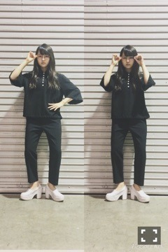
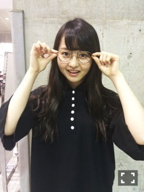
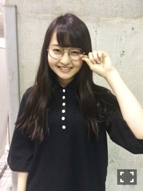
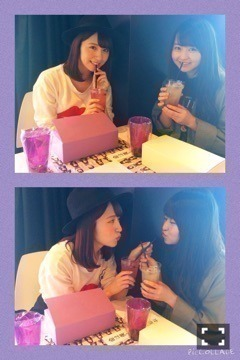

| 2015/05 04 Mon | スパークリング糖。 640回目 |
パシフィコ横浜で2日連続握手会〜
来てくださったみなさん
ありがとうございました！
全国握手会
会場が広くなってより
たくさんの人が来てくださった〜！
ミニライブだけでは勿体無いと思った
あらかじめ語られるロマンス
大盛り上がりだった〜♪
あの呪文のような12星座の歌唱と
プラス、名前を呼んでほしい
ところがあります。
↓↓↓
占いなんて
そんな信じてなかった(みなみ！)
だって科学的根拠
なにもなにもないんだもん(あすか！)
でも今はちょっと(いくちゃん！)
信じてみてもいいかも(いこま！)
素晴らしい未来(まりか！)
予測できたら教えて〜(みおな！)
みんなで話し合って決めました。
サビ前はこのような感じで
コールしていただけると
より盛り上がります＼(^o^)／
真夏の全国ツアー2015
今年もやってくるーーーー！！
宮城 ゼビオアリーナ仙台
愛知 日本ガイシホール
広島 広島サンプラザホール
福岡 福岡国際センター
大阪 大阪城ホール
東京 明治神宮野球場
今回はそれぞれの会場で2days
全16公演です。
ツアーに向けてあらロマコール
みんなで練習しよーう
そういえば
2nd birthday liveDVDが
やっと発売されます。
休憩中にやったあの伝説の←
まりっか'17が収録されてるかも

エンタメペアグラビアレーン
まりかわごレーン
コアなところにのめり込む2人。
情報交換多し。話が合います。
みんなに話しても分からないことも
川後なら知ってる！
Popteen投票しなきゃ！
流行に敏感でおしゃれが大好きで
いろんなモデルやメディアに
詳しいのも知ってます。
川後の夢が叶いますように。
みんなも応援しよう！！
個別握手会

セレクトショップで買った
ポロシャツ
KBFのタックパンツ
mysticのヒール
1部から真っ黒でびっくりされた！
個人的に好きな格好。
髪の毛ウェッティーにして
アイシャドウ塗りまくりの
モードメイクをしたくなるね ！

五分丈が珍しいポロシャツ。
包みボタンに惹かれました。
シルエットが本当に可愛いです。

メガネはレンズがないよ！
ラーメン食べても曇らないよ！
レモンラーメン食べたい...
絶対美味しい...
水曜日の名古屋全握は
13レーンで愛未とペア。
愛未と最近ごはん行ったばっかり笑
嬉しい〜
是非ともよろしくお願いします。
今日仕事の合間に
乃木カフェおじゃました＼(^o^)／

アルバイトのみなみと
お客さんの美彩と私の3人で
行ってきたよー
ピーチジンジャーっていう飲み物と
マンゴージェラート美味しかった！
カフェは10日までです。
柱にサインした他にも落書きしたので
行って探してみてね。
明日はbayFM公開生放送！
12:00〜15:50
幕張メッセ
国際展示場1ホール 特設ステージ
ぜひ遊びに来てください〜
ブログで顔文字をなんとなく
使わないようにしてたけど、
句読点だけでは
感情に限界があると思ったので
顔文字使っていこう...＼(^o^)／
まりか
コメント(734)
2015/05/04 21:54